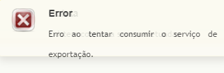

-

Solução: Consultar o CNPJ no Cad. Central para dar um parecer a unidade se necessário
Direcionar ao setor do Faturamento / Seguros -
Solução: Verificar se o QZ Tray está rodando na máquina
-
Solução: Direcionar ao setor do Faturamento
-
Solução: Passar para o comercial responsável pela região da franquia
-

Solução: Consultar no SQL se há alguma franquia que atende o cep, caso não houver o contato deve ser feito com Franchising.
-
Solução: Se a negocicação for realmente para o cliente, verificar com o comercial pois a validade é indeterminada
-

Solução: Consultar ordem de coleta e verificar se está tudo ok (campo da nota, danfe, etc)
-

Solução: 80% das vezes a resolução é verificar o e-mail do operador que está incorreto no Cadastros > Usuário > +Cadastros
-

Solução: Não me lembro desse, mas é só consultar o cte e ver se o processo operacional está sendo feito corretamente
-
Solução: Alterar a data na tela do fraction web (colocar uma data superior)